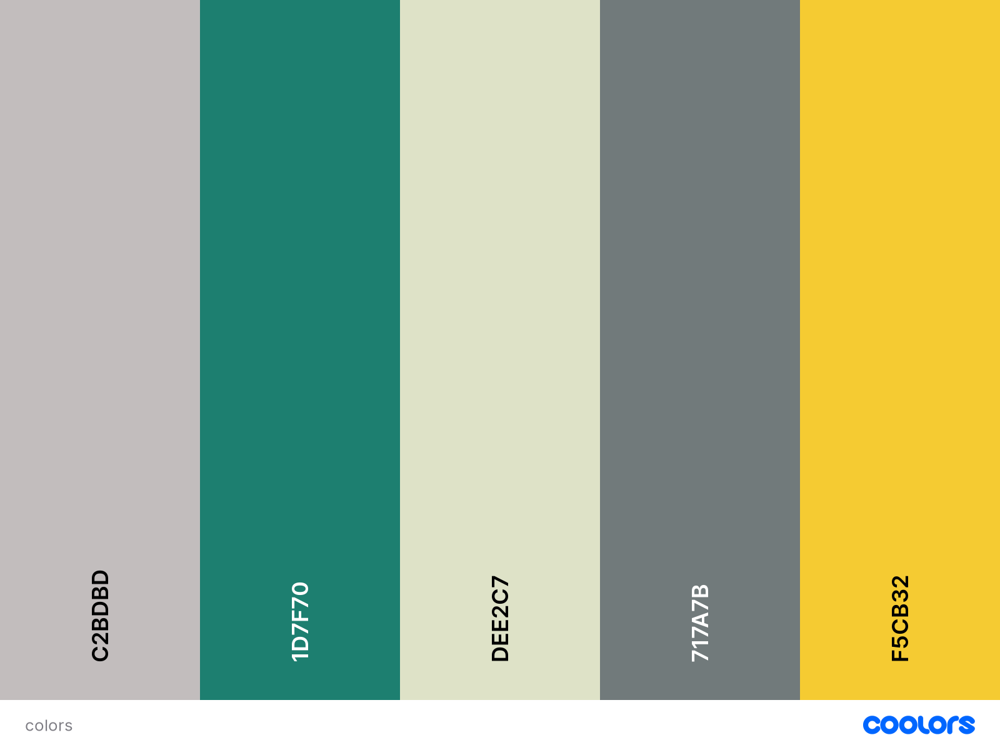

Website Planning Document
Color Scheme
The use of this color scheme:
- #717A7B: Heading and footer.
- #1d7f70: Navigation bar and "Website Planning Document" headings
- #44BBCD: Navigation hover.
- Color white: Fonts color for the header, footer and navigation items.
- Color black: Main fonts.
Typography
PT Serif
Roboto slab